Quickstart - Code Coverage tutorial¶
The Quickstart guide will give you an insight into what Code Coverage is and how you can identify areas of your code that need more testing, even if you haven’t written any automated tests. It takes about 30 minutes to complete.
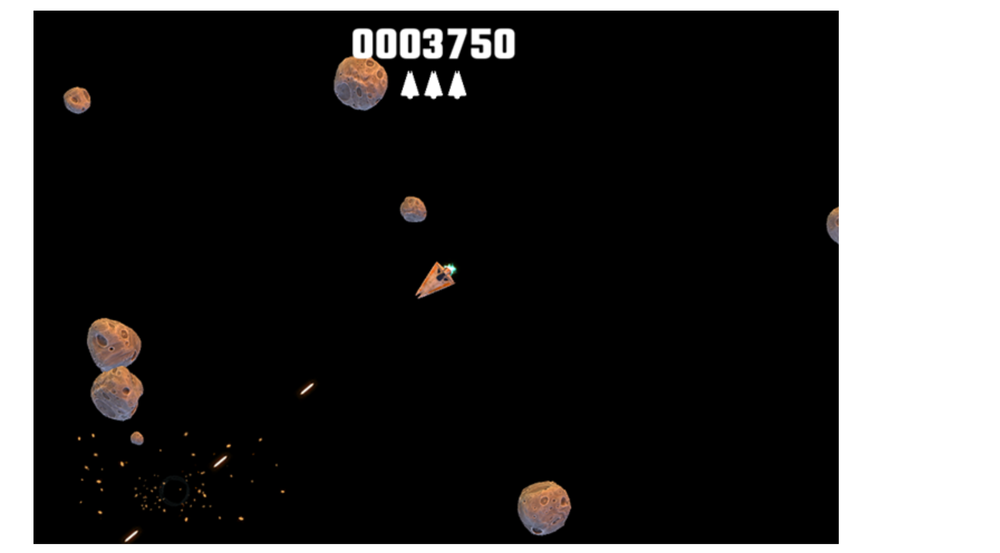
Tasks¶
What is Code Coverage (2 min)
Enable Code Coverage (1 min)
Clear the coverage data (1 min)
Note: Estimated times are shown for each task to give you a better understanding of the time required. These times are rough guidelines - it is fine to take as much or as little time as needed.
1. What is Code Coverage (2 min)¶
Code Coverage is a measure of how much of your code has been executed. It is normally associated with automated tests, but you can gather coverage data in Unity at any time when the Editor is running.
It is typically presented as a report that shows the percentage of the code that has been executed. For automated testing the report does not measure the quality of tests, only whether your code is executed by PlayMode and EditMode tests. It is especially useful to check that critical or high risk areas of your code are covered, because they should receive the most rigorous testing.
It is much easier to accidentally introduce bugs into code that is not covered by tests, because those bugs are not detected straight away by the tests and can instead cause problems later — such as after you have published your game or app.
Additionally, the Code Coverage package offers a Coverage Recording feature which allows capturing coverage data on demand, in case you do not have tests in your project or doing manual testing.
2. Install the Code Coverage package (2 min)¶
Note: Skip this task if the package is already installed.
Use the Unity Package Manager to find and install the Code Coverage package.

Alternatively, use the Add (+) dropdown and select Add package from git URL… or Add package by name… and type com.unity.testtools.codecoverage.
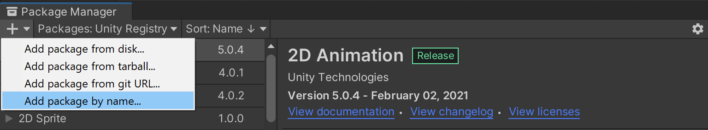
To verify that Code Coverage has been installed correctly, open the Code Coverage window (go to Window > Analysis > Code Coverage). If you don’t see the Code Coverage menu item, then Code Coverage did not install correctly.
3. Install the Asteroids sample project (1 min)¶
In the Unity Package Manager (Window > Package Manager) select the Code Coverage package, if not already selected.
Find the Samples section in the package details (right hand side) and select Import next to Code Coverage Tutorial.
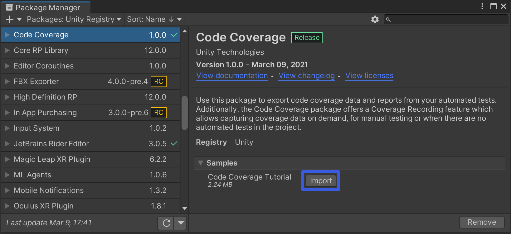
4. Enable Code Coverage (1 min)¶
To enable Code Coverage open the Code Coverage window (go to Window > Analysis > Code Coverage) and select Enable Code Coverage if not already selected, to be able to generate Coverage data and reports.
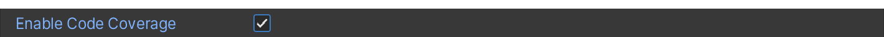
Note: Enabling Code Coverage adds some overhead to the editor and can affect the performance.
5. Understanding the game code: Shoot() function (4 min)¶
Go to
Asteroids/Scenesin Project View and open the Asteroids scene.
This is located inAssets/Samples/Code Coverage/<version>/Code Coverage Tutorial.Hit Play and play the game for a minute or two.
Use the arrow keys to move and the spacebar to shoot.Exit PlayMode.
Open the
Scripts/Controllers/SpaceshipController.csscript.Study the Shoot function.
If Weapon is Basic, the Prefabs/Weapons/Projectile prefab is instantiated
If Weapon is Laser, the Prefabs/Weapons/Laser prefab is instantiated
6. Generate a Coverage report from PlayMode tests (3 min)¶
Open the Code Coverage window (go to Window > Analysis > Code Coverage).
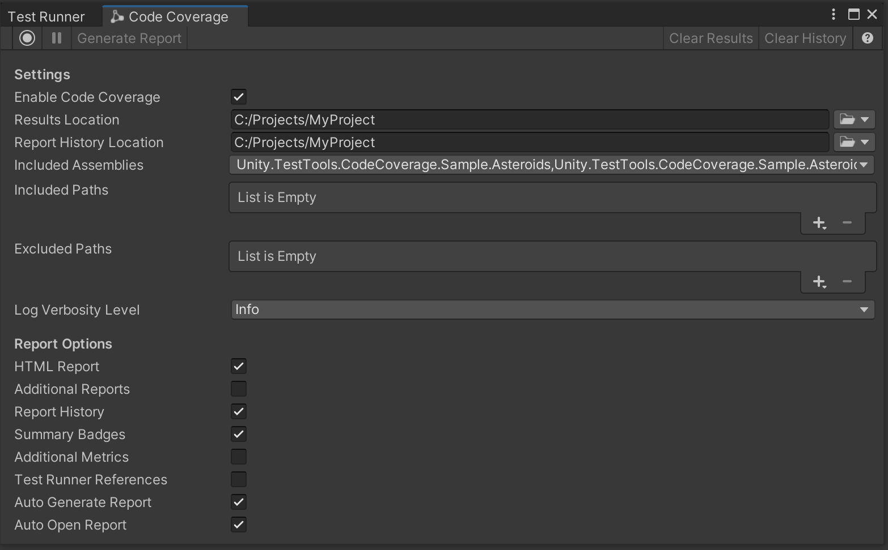If you see this warning select Switch to debug mode.
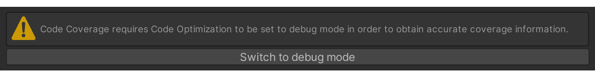 Code Optimization was introduced in Unity 2020.1; in Release mode the code is optimized and therefore not directly represented by the original code. Therefore, Debug mode is required in order to obtain accurate code coverage information.Click the Included Assemblies dropdown to make sure only
Unity.TestTools.CodeCoverage.Sample.Asteroidsand
Unity.TestTools.CodeCoverage.Sample.Asteroids.Testsare selected.
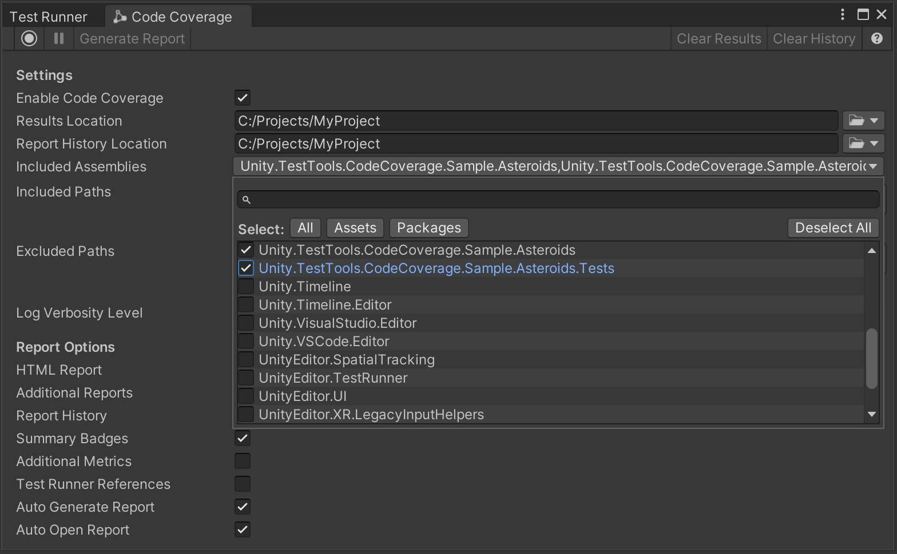Make sure HTML Report, Report History, Auto Generate Report and Auto Open Report are all checked. 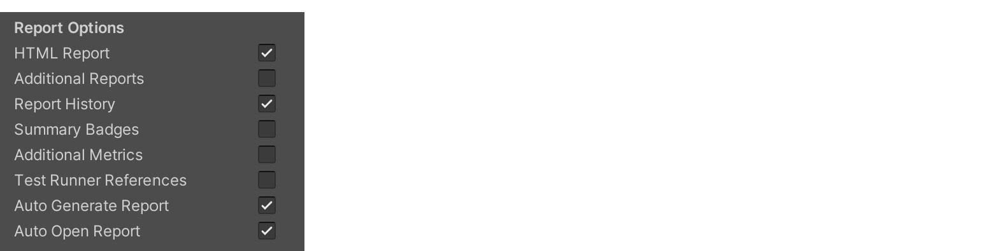
Switch to the Test Runner window, select the PlayMode tab and hit Run All tests.
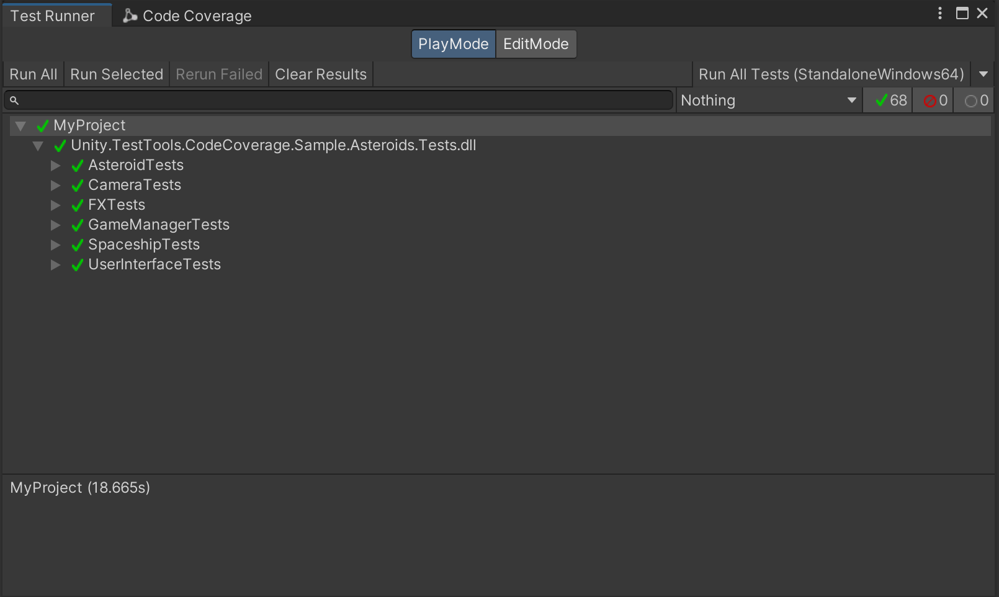When the tests finish running, a file viewer window will open up containing the coverage report. Select
index.htm.Look for the classes with low coverage, especially LaserController, BaseProjectile and ProjectileController.
You can sort the results by Line coverage.
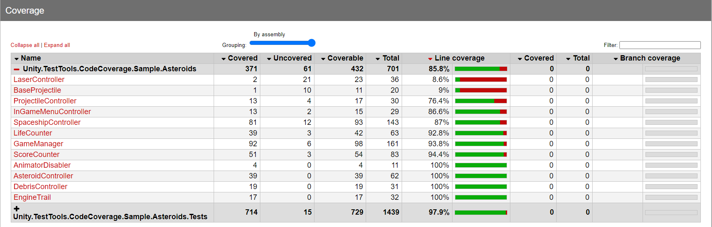
See also How to interpret the results.
7. Add Weapon tests to improve coverage (3 min)¶
Open the
Tests/WeaponTests.csscript.Uncomment all the tests (from line 35 down to line 237).
Back in the Test Runner, hit Run All tests again.
When the tests finish running, a file viewer window will open up containing the coverage report. Select
index.htm.Notice that now BaseProjectile and ProjectileController coverage is considerably higher, but LaserController has not improved much.
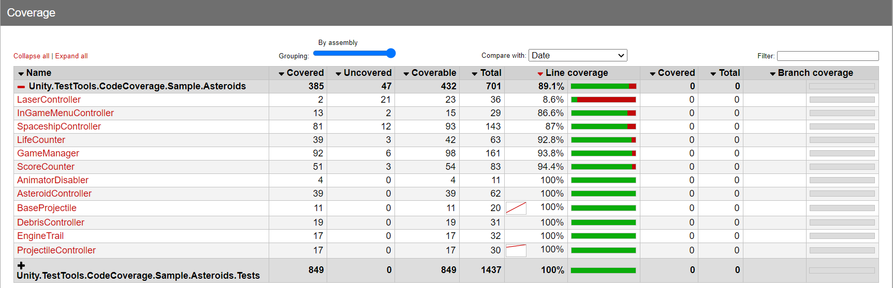
8. Add a test for the LaserController (4 min)¶
Open the
Tests/WeaponTests.csscript.Go to the _18_LaserFiresSuccessfully test in line 225.
Uncomment and study the code.
Back in the Test Runner, hit Run All tests again.
When the tests finish running, a file viewer window will open up containing the coverage report. Select
index.htm.Notice how the coverage for LaserController has improved.
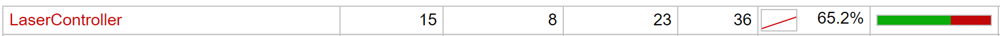Select the LaserController class to enter the class view and notice that about 2/3 (65%) of the code is now covered (green).
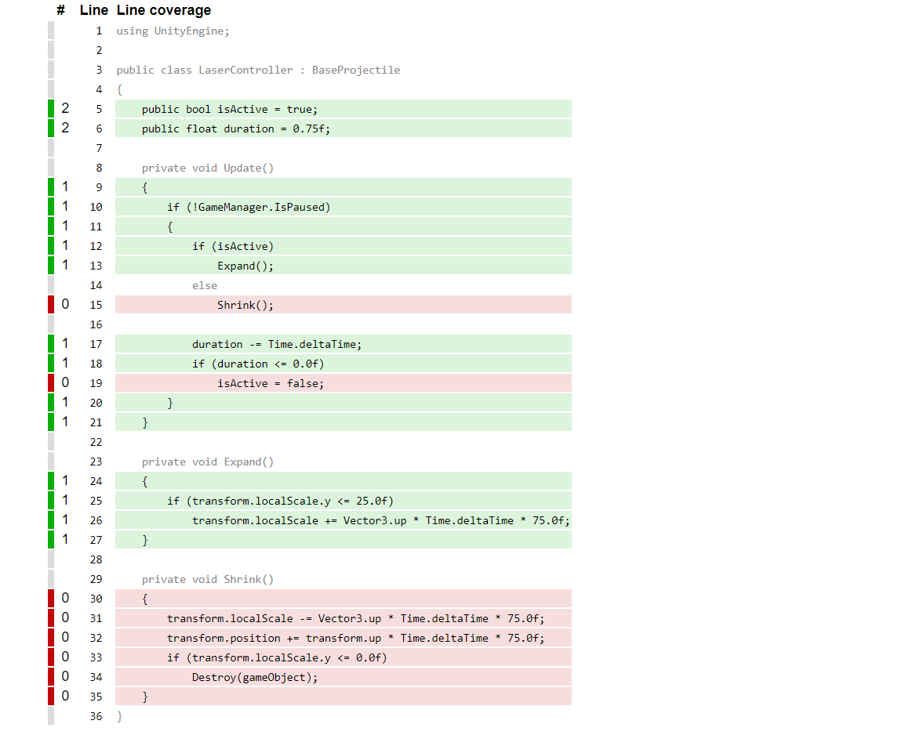
Complete the Bonus Task at the end of the tutorial to get 100% coverage!
9. Clear the coverage data (1 min)¶
Open the Code Coverage window (go to Window > Analysis > Code Coverage).
Select Clear Results and confirm.
Select Clear History and confirm.
10. Generate a Coverage report using Coverage Recording (4 min)¶
Go to
Asteroids/Scenesin Project View and open the Asteroids scene, if not opened already.Open the Code Coverage window. Make sure HTML Report, Report History, Auto Generate Report and Auto Open Report all are checked.
Select Start Recording.

Hit Play to play the game and exit PlayMode before you get 8000 points.
Select Stop Recording.
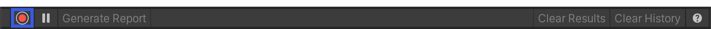A file viewer window will open up containing the coverage report. Select
index.htm.Notice that LaserController has 0% coverage.
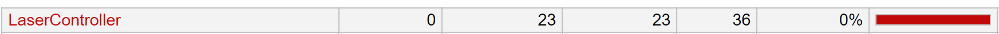Go back to the Code Coverage window.
Select Start Recording.
Now hit Play to play the game again but this time exit PlayMode when you get 8000 points.
Select Stop Recording.
Notice that LaserController coverage is now 100%.
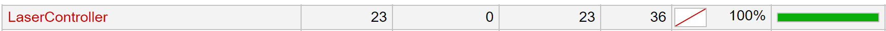
See also How to interpret the results.
11. Bonus task (5-8 min)¶
Write a new test that checks that the laser gets destroyed after 2 seconds, which will also cover the rest of the code in LaserController.
Suggested name: _19_LaserFiresAndIsDestroyedAfterTwoSeconds.
Hint: You can use yield return new WaitForSeconds(2f); to wait for 2 seconds.
Well done for finishing the Code Coverage tutorial!¶
For questions and feedback please visit the Testing & Automation forum section to browse current conversations or start a new thread. Please use the code coverage tag.